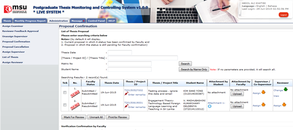

Proposal Confirmation page will list all the thesis proposal that being proposed by the Student to the Faculty for review and approval decision. At this stage the Faculty can also recommend the right Supervisor / Co-supervisor to supervise the student on their thesis including the Reviewer.

Figure 25: Administration Tab – Proposal Confirmation
Steps:-
- Click on the Administration tab on the system Top panel section.
- The Administration menu will be displayed on the system Left panel and click on it.
- Click the Proposal Confirmation and the searching page will be displayed which the user can search for a particular thesis to manage it. Otherwise, the result will show all the thesis.
- The searching criteria can be entered individually or by combination as shown by field below
- Thesis ID
- Matrix No
- Thesis Date
- Click on the Search button to get the search result.
- Alternatively the search can be done via Student Name by entering the student name and click Search by Student Name Only.
Created with the Personal Edition of HelpNDoc: Free EBook and documentation generator